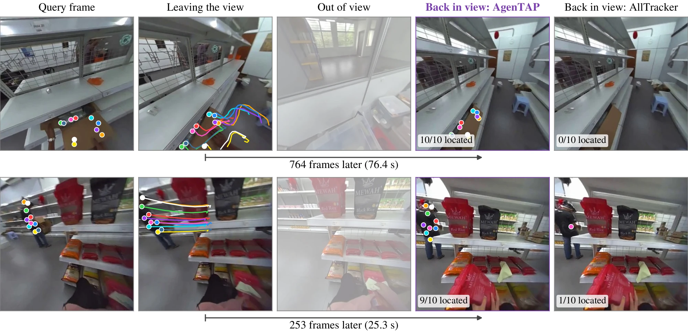
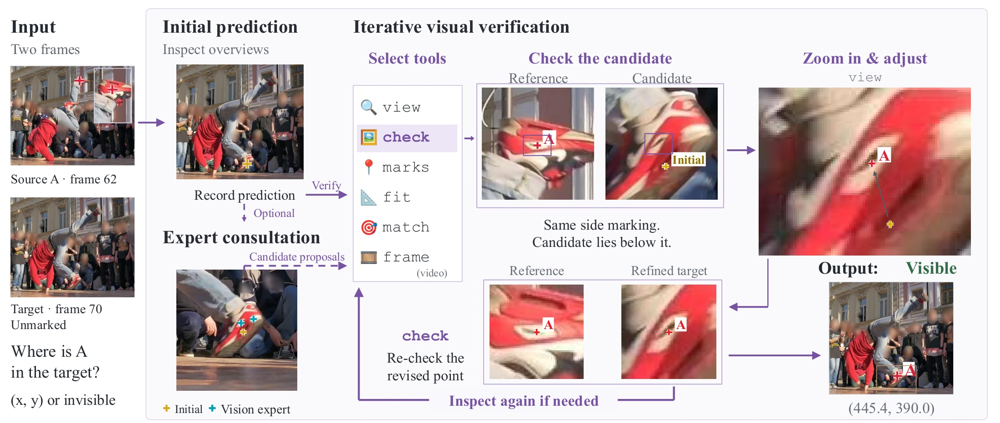

For twenty years, finding the same point in two images has been the job of specialist models: first hand-designed features, then learned matchers and point trackers. On our benchmark, GPT-6 Astra, a general vision-language model (VLM) with no training for this task, now beats every specialist we tested on the same input. It does so once it can look closer and check its own answer.
过去二十年，在两张图里找到同一个点，一直是专用模型的活：先是人工设计的特征，后来是学出来的匹配器和点追踪器。在我们的基准上，没有为这个任务训练过的通用视觉语言模型（VLM）GPT-6 Astra，在输入相同的条件下超过了我们测试的所有专用模型。前提是让它能凑近看，能核对自己的答案。
That is one model on one benchmark. We think more will follow, and this post explains why.
这只是一个模型、一个基准。但我们认为后面还会有更多，这篇文章想讲清楚为什么。
The task is called point correspondence: given a point in one frame, find the same physical point in another frame. It sounds small, but a lot depends on it. Grasping an object, building a 4D model of a scene, and learning from videos of people’s hands all need the exact point. A few pixels off can mean a different part of the object.
这个任务叫点对应（point correspondence）：给定一帧里的一个点，在另一帧里找到物体表面上的同一个点。听上去是件小事，可很多事情都靠它。抓取一个物体，重建一个场景的 4D 模型，从人手操作的视频里学习，都要用到那个精确的点。差几个像素，可能就落到了物体的另一个部位上。
It is also a good test of whether a model really sees. Knowing that something is a mug is not enough. The model has to find the exact same spot on the mug.
这也是检验模型是不是真的“看懂了”的好办法。知道这是一个杯子还不够，模型得在杯子上找到完全相同的那个位置。
Here is the example we use throughout. A mug has painted stripes, a small chip in its rim, and a star painted just under the chip. Mark the chip. Someone moves the mug behind a laptop. A minute later the laptop is taken away, and the mug has been turned. Where is the chip now? Can you even see it? The answer has two parts: a pixel location, and whether the point is visible.
下面这个例子会贯穿全文。一个杯子，杯身画着条纹，杯口有一个小缺口，缺口正下方画着一颗小星星。在缺口上做个标记。有人把杯子挪到了笔记本电脑后面。一分钟后电脑被拿开，杯子已经转了个方向。缺口现在在哪？还看得见吗？答案有两部分：一个像素位置，以及这个点是否可见。
There are two common ways to answer. One uses semantics: what the object is and which part you are looking at. The other uses geometry and appearance: which pixels look alike and how surfaces move. We argue that neither is enough alone, and that it takes reasoning to combine them.
常见的回答思路有两种。一种靠语义：物体是什么，你看的是哪个部位。另一种靠几何和外观：哪些像素长得像，表面怎么运动。我们想说的是，两者单独用都不够，要靠推理把它们结合起来。
the betPoint correspondence is not only a semantic problem or only a geometric one. Solving it takes reasoning that uses both.
我们的判断点对应不只是语义问题，也不只是几何问题。要解决它，需要把两者结合起来的推理。
01Why Semantics Is Not Enough为什么光有语义不够
VLMs are very good at semantics. They can name objects, describe their parts, and tell you where things are in an image. So it is natural to ask whether they can also follow a point.
VLM 很擅长语义。它们能叫出物体的名字，描述物体的各个部位，也能告诉你东西在图里的什么地方。所以很自然会想问：它们能不能也跟住一个点？
The trouble is that semantics answers a different question. It tells you what something is. Correspondence asks which exact point it is. For our mug, semantics says “on the rim, near the star.” That is an area. The chip is one small spot inside it.
麻烦在于，语义回答的是另一个问题。它告诉你这是什么，而点对应问的是：究竟是哪一个点。对我们的杯子，语义会说“在杯口上，靠近星星”。这是一片区域，缺口只是其中很小的一处。
We see this when we ask VLMs directly. Given only the two images, GPT-6 Astra puts 87.1% of visible points within 16 pixels of the correct location, but only 23.8% within one pixel. It finds the right area and misses the exact spot.
直接问 VLM 就能看到这一点。只给两张图时，GPT-6 Astra 能把 87.1% 的可见点放在离正确位置 16 像素以内，但 1 像素以内的只有 23.8%。它找得到大致区域，却找不准那个位置。
Part of the reason is how it looks at images. It sees each image once, as a whole, and cannot zoom in on the spot it has in mind. Some of its other mistakes land on the same part of a similar-looking object, a known kind of VLM hallucination1.
部分原因在于它看图的方式。每张图它只看一眼，而且是整张一起看，没法放大心里想的那个位置。它的另一些错误，是把点放到另一个长得很像的物体的同一部位上，这是 VLM 一种已知的幻觉1。
02Why Geometry Is Not Enough为什么光有几何不够
The other approach ignores what things are. Image matchers2,3 look for pixels that look alike in two views. Point trackers4,5 follow a surface from frame to frame using local appearance and smooth motion. When the surface stays in view and looks about the same, these methods are fast and accurate.
另一种思路不管东西是什么。图像匹配方法2,3在两个视角里找长得像的像素。点追踪器4,5靠局部外观和平滑的运动，一帧一帧地跟住表面。只要表面一直在画面里、样子变化不大，这些方法又快又准。
They break in exactly the cases our mug is about. The stripes all look alike, so “looks alike” can land one stripe over. Once the mug is behind the laptop, there is no motion to follow. When it comes back, the tracker has no memory of what it was tracking. In our experiments, trackers often mark a point that has come back as invisible, so the track is never reconnected.
可它们恰恰会在杯子这个例子里失效。条纹一条条长得都一样，光看“长得像”，很可能错到隔壁那条上。杯子到了电脑后面，就没有运动可以跟了。等它再出现，追踪器已经不记得自己在跟什么。在我们的实验里，追踪器经常把重新出现的点标成不可见，轨迹就再也接不上。
Geometry has one more problem. To carry a point from one view to another, you pick nearby landmarks and assume they move together with the point. That only works if the landmarks are on the same surface. The star is on the mug. The sticker on the laptop is not. Telling those apart is a question about objects and parts, so it needs semantics.
几何还有一个问题。要把一个点从一个视角带到另一个视角，你会挑附近的参照点，假设它们和这个点一起运动。这只在参照点和它位于同一个表面上时才成立。星星在杯子上，电脑上的贴纸不在。分清这两者，是关于物体和部位的问题，所以需要语义。
The same thing happens in real video. Here are two recordings.
真实视频里也是这样。下面是两段实际录制的例子。

03Why Reasoning为什么需要推理
Think about how a person finds the chip. They look for something nearby that is easy to find again, like the star. Then they guess: the chip should be right above the star, on the rim. They zoom in on that spot and compare it with the first frame. Maybe the guess is off by the width of a stripe, so they move it. If the star has turned to the far side, they decide the chip is hidden too and say it is not visible.
想想人是怎么找到那个缺口的。先找附近一个容易再认出来的东西，比如那颗星星。然后猜：缺口应该就在星星正上方的杯口上。再凑近这个位置，和第一帧比一比。也许猜偏了一条条纹的宽度，那就挪过去。如果星星已经转到了背面，就判断缺口也被挡住了，回答不可见。
This is what we mean by reasoning. You decide what to look at next based on what you have seen so far, and you change your answer when the evidence does not fit. Semantics tells you where to look and which landmarks to trust. Geometry turns those landmarks into an exact location. Reasoning puts the two together and checks the result.
这就是我们说的推理：根据已经看到的东西决定下一步看哪里，证据对不上时就改答案。语义告诉你该看哪里、该信哪些参照点，几何把这些参照点变成精确的位置，推理负责把两者放在一起，并检查结果。
A model that answers in one shot cannot do this. It sees two full images and cannot zoom in or test a guess. So the model needs tools to look, compare and measure, and it needs to decide for itself when to use them. That is the idea behind AgenTAP.
一次性给出答案的模型做不到这一点。它看到的是两张完整的图，没法放大，也没法验证自己的猜测。所以模型需要能看、能比、能量的工具，并且要自己决定什么时候用。这就是 AgenTAP 的想法。
04AgenTAP
AgenTAP gives a VLM these tools. We do not train the model for correspondence. We use it as it is. It gets the two images, the marked point, and four kinds of tools:
AgenTAP 给 VLM 配上了这些工具。我们不为点对应训练模型，直接拿来用。模型拿到两张图、标记的点，以及四类工具：
viewzoom in and adjust contrast放大，调对比度checkcompare two crops side by side把两块裁剪并排比较fitmatchcompute a location from landmarks根据参照点算出位置framelook at the frames in between查看中间的帧
The model gives its own answer first. Only after that can it see suggestions from existing trackers. It treats them as guesses that still need checking, and it keeps checking and adjusting until the evidence agrees.
模型先给出自己的答案，之后才能看到现有追踪器的建议。它把这些建议当作仍需验证的猜测，不断检查、调整，直到证据一致。
Here are two messages from recorded sessions. In the first, the suggestion from a specialist model lands on the wrong surface. In the second, it is a few pixels off.
下面是两段会话里模型自己说的话。第一段里，专用模型的建议落在了错误的表面上。第二段里，它偏了几个像素。
The marked point is on the plate, just behind and to the left of the doughnut. The automatic match lands on the table, so I’m using the plate’s rim details to refine the position.
标记的点在盘子上，在甜甜圈左后方一点。自动匹配落在了桌面上，所以我用盘子边缘的细节来细化位置。
The point is visible on the shorts. The nearby yellow stripe places it slightly left of the matcher’s suggestion.
这个点在短裤上，是可见的。旁边那条黄色条纹说明，它比匹配器给的位置稍微偏左。

05Results结果
We tested this on TrackingBench, 2,000 queries from 272 real videos. With GPT-6 Astra, AgenTAP beats every specialist model we tested when both get the same input, whether that is two frames or the whole video.
我们在 TrackingBench 上做了测试，它包含来自 272 段真实视频的 2,000 个查询。用 GPT-6 Astra 时，只要输入相同，不论是两帧还是整段视频，AgenTAP 都超过了我们测试的所有专用模型。
Other models gain too. The chart ranks eight VLMs. Every one of them gets better with AgenTAP, and seven of the eight end up ahead of the best specialist model that sees the same two images.
其他模型也受益。下图给八个 VLM 排了名。每一个用上 AgenTAP 都变好了，八个里有七个超过了看同样两张图的最好的专用模型。
Most of the gain comes from the last few pixels, and weaker models gain the most. The gap between GPT-6 Astra and Inkling 2 Small shrinks from 26.0 to 7.3 APD.
提升主要来自最后那几个像素，较弱的模型提升最多。GPT-6 Astra 和 Inkling 2 Small 之间的差距从 26.0 APD 缩小到 7.3 APD。
from the paperVLM reasoning has advanced from objects to individual pixels.
论文里的一句话VLM 的推理，已经从物体推进到了单个像素。
It still makes mistakes. When two parts look alike, like the two halves of a broken eggshell, the agent can pick the wrong one, because zooming in shows nothing that tells them apart.
它仍然会出错。当两个部分长得很像，比如碎蛋壳的两半，智能体可能选错，因为放大之后也看不出任何能区分它们的东西。
06Final Remarks最后
We started with a question that sounds almost too simple: where did this point go? Semantics finds the right area but not the exact pixel. Geometry can find the exact pixel, but only if it knows which surface to trust. Guessing, looking closer and checking connects the two. With the right tools, a VLM now does this well enough to beat the specialist models we tested.
我们从一个听上去简单得过分的问题出发：这个点去哪了？语义能找到正确的区域，但找不到精确的像素。几何能找到精确的像素，但前提是知道该信哪个表面。猜测、凑近看、再检查，把两者连了起来。有了合适的工具，VLM 现在已经能做得比我们测试的专用模型更好。
What excites us most is finding a point again after it comes back into view. We used AgenTAP this way to build EgoTAP-4D, a dataset of 3D point tracks over 297.2 hours of video from head-mounted cameras. Adding it to the training data of a 3D point tracker improves that tracker on average. Long trajectories like these could also help robots learn from people.
最让我们兴奋的，是点重新回到画面后还能再找回来。我们用 AgenTAP 这样做，构建了 EgoTAP-4D，一个基于 297.2 小时头戴相机视频的 3D 点轨迹数据集。把它加进一个 3D 点追踪器的训练数据，这个追踪器的平均表现会变好。这样的长轨迹也可能帮助机器人向人学习。
It is not cheap yet. Each query uses 141K to 184K input tokens. Sharing one session across 16 points cuts that by 56 to 70% with similar accuracy. The next steps are to share more work across points and frames, and later to distill it into smaller models that run as fast as a tracker.
它现在还不便宜。每个查询要用 14.1 万到 18.4 万个输入 token。让 16 个点共享一个会话，可以省下 56% 到 70%，精度相近。接下来要做的，是在点和帧之间共享更多的工作，之后再蒸馏到能跑得和追踪器一样快的小模型里。
If this view is right, future progress in correspondence will come from better reasoning as much as from better features.
如果这个看法是对的，点对应今后的进步，会既来自更好的特征，也来自更好的推理。
a noteThis post is our personal view of the problem, formed while working on AgenTAP. We used an LLM to help edit the text.
说明这篇文章是我们在做 AgenTAP 的过程中形成的个人看法。文字由 LLM 协助编辑。
References参考文献
- Yifan Li et al. Evaluating Object Hallucination in Large Vision-Language Models. EMNLP, 2023.
- David G. Lowe. Distinctive Image Features from Scale-Invariant Keypoints. IJCV, 2004.
- Johan Edstedt et al. RoMa v2: Harder Better Faster Denser Feature Matching. ECCV, 2026.
- Adam W. Harley et al. AllTracker: Efficient Dense Point Tracking at High Resolution. ICCV, 2025.
- Nikita Karaev et al. CoTracker3: Simpler and Better Point Tracking by Pseudo-Labelling Real Videos. ICCV, 2025.
- Carl Doersch et al. TAP-Vid: A Benchmark for Tracking Any Point in a Video. NeurIPS Datasets and Benchmarks, 2022.
BibTeX
@article{chen2026agentap,
title = {Tracking Any Point with Agentic Visual Reasoning},
author = {Chen, Xuweiyi and Yao, Jin and Mou, Linzhan and Gong, Lei and Liu, Di and Zhang, Cheng
and Ma, Ziqiao and Xu, Sihan and Harley, Adam W. and Qian, Shengyi and Cheng, Zezhou},
journal = {arXiv preprint},
year = {2026}
}